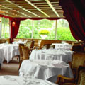
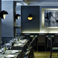

Traditional French Cuisine
We provides a selection of Paris leading establishments offering French cuisine. Whether seeking meats roast or in sauce, market-fresh vegetables, delicately seasoned fish or traditional French dishes, choose your traditional cuisine restaurant from the prime addresses of Best Restaurants Paris. Consult the detailed sheets of the featured establishments and choose that traditional cuisine restaurant you're looking for. The photos, extracts from the carte and comprehensive practical information will give you a clearer idea of what to expect from the traditional cuisine restaurant where you would like to lunch or dine.

LE CIEL DE PARIS
33, avenue du Maine - Paris 15èmePhone: +33 1 40 64 77 64
Fax : +33 1 43 21 48 37
Send Email | Visit Our Website

DES GARS DANS LA CUISINE
72, rue Vieille du Temple - Paris 3èmePhone : +33 1 42 74 88 26
Fax : +33 1 42 74 88 26
Send Email | Visit Our Website

PIERRE AU PALAIS ROYAL
10, rue de Richelieu ou 7, rue Montpensier - Paris 1erPhone : +33 1 42 96 09 17
Fax : +33 1 42 96 26 40
Send Email | Visit Our Website

FOUQUET'S
99, avenue des Champs-Elysées - Paris 8èmePhone : +33 1 40 69 60 50
Fax : +33 1 40 69 60 35
Send Email | Visit Our Website

Phone : +33 1 47 43 15 15
Fax : +33 1 46 51 16 94
Send Email | Visit Our Website
PAVILLON DES PRINCES
69, avenue de la Porte d'Auteuil - Paris 16èmePhone : +33 1 47 43 15 15
Fax : +33 1 46 51 16 94
Send Email | Visit Our Website

Phone : +33 1 53 57 41 00
Fax : +33 1 53 57 41 01
Visit Our Website
LA TRUFFE MARBEUF
14, rue Marbeuf - Paris 8èmePhone : +33 1 53 57 41 00
Fax : +33 1 53 57 41 01
Visit Our Website